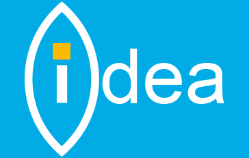

 Biodegradable Packaging
My idea is to create a medical transport packaging that is biodegradable so that it is good for the environment.
Mary Carter
5 star average of 54 people
iApp for Vacation/Sick Days
My idea is to create an apple application that allows the employees to log their vacation and sick days from where ever they are so they don't need to call their supervisors.
Tim Flinn
4 star average of 48 people
Incentive Program
My idea is to create an incentive reward program for an extended period of Job Excellence. So that employees will feel more valued and respected for the talents that they give to this burgeoning company.
James Allison
4 star average of 29 people